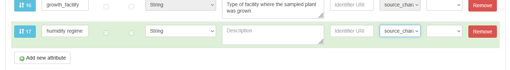
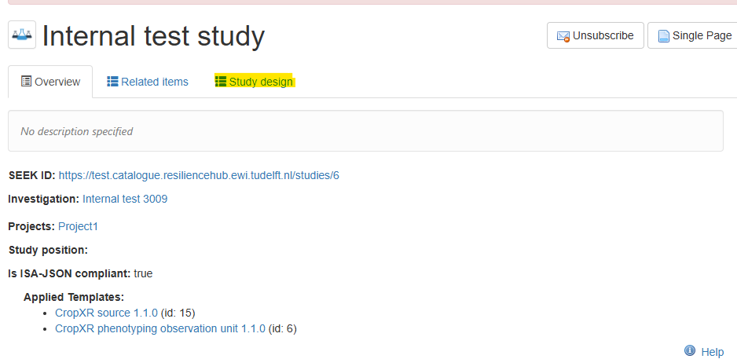
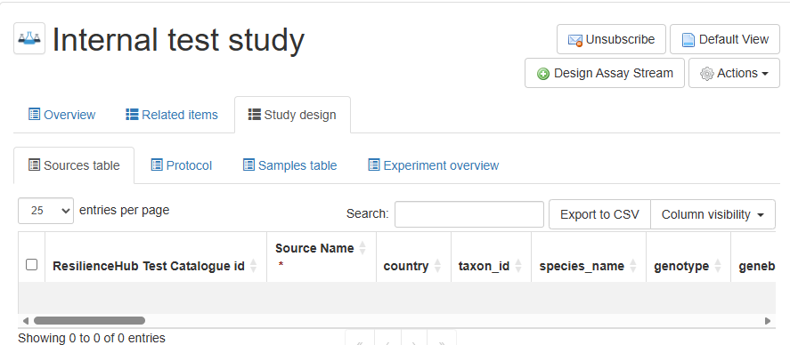

Detailed instructions¶
Setting up a study happens in four phases. Work through them in order.
| Phase | What you do |
|---|---|
| Phase 0 | Get your investigation and study IDs |
| Phase 1 | Create the template |
| Phase 2 | Enter the metadata |
| Phase 3 | Update permissions and complete the metadata |
Phase 0: Get your investigation and study IDs¶
-
Understand the basic structure of the metadata model.
-
Decide what to group together. Decide on what experiments to group into (the investigation and) the study.
-
Choose the study type: sequencing, phenotyping or combined.
Info
Inform DataXR well up front when your study does not fit these types.
-
Register your study. Make sure that you have registered your study in this form. After the admin has checked the registration, you will receive a study ID, which you need when entering the metadata.
-
Make sure you have an active account. We use FairdomSEEK as the data catalogue, try to login with the following steps.
- Select Login in the top right corner.
- Under the tab KeyCloak, click 🔒 Sign in with KeyCloak.
- Click SURFContext to use your university account.
- For the first login, give the needed permissions.
-
Request to be added to a project if you have not been added already. This is done by a project admin.
-
Gather the files with the metadata that you already collected. This includes:
- e-lab journal entries
- files that outline experimental conditions per plant
- files that link output files to the experiment
- etc.
FairdomSEEK can be slow, do not click again while loading
Be aware, if you click twice on "create" while it is loading, it can create the same resource multiple times.
Phase 1: Create the template¶
Always select the highest ID
This phase asks you to choose a template four times: for the study source, for the study sample or observation unit, and for each assay. Every one of those lists shows every version of the template that has been released, all under the same name. Nothing in the name tells the versions apart. The ID does: the highest ID is the most recent version.
Whenever the selection tool offers more than one entry with the same name, select the one with the highest ID. A lower one gives your study an outdated set of fields, and the template of a sample type cannot be changed once samples have been created from it.
Step 1: Log in¶
Log in to the Catalogue webpage.
Step 2: Find or create an investigation¶
Click 🔎 Browse in the top left corner and select Investigations.
(Click the menu first when using a narrow window.)
If your investigation is not yet registered:
- Click ➕ Create and select Investigations.
- Add a Title and select a Project.
- Click Create.
Step 3: Create a study¶
From within the investigation, create a new study by clicking ➕ Design Study at the top.
-
Title: create a title using the naming convention.
-
Extended metadata: choose the extended metadata type that is relevant for your study.
Only fill the mandatory fields for now (to be able to save). The other fields can still be entered later.
-
Skip for now: “Study position”, “Sharing”, “Creators”, “Publications” and “Discussion Channels”. These fields can be reviewed and modified later.
-
Define Sample type for Source:
- Select an Existing template.
- Choose the default template CropXR source — where the list holds several entries under that name, take the one with the highest ID.
- Click Apply.
- Review the predefined parameters that are collected for the study source. These are the fields that will be used to describe your experimental setup and conditions.
- If there are any missing, you can add them at the bottom by selecting ➕ Add new attribute. Make sure that the column ISA Tag is set to
source_characteristic. Additional fields can also be added later.

Use MIAPPE field names
In MIAPPE there are many suggestions for environmental parameters and experimental factors to collect. Please reference these lists, to get a predictable field name.
Do not remove fields
Please do not remove any fields; this will make your study harder to find. All fields not relevant to your study can be left empty.
-
SOPs: skip for now, these will be added later.
-
Define Sample type for Sample:
- Select an Existing template.
-
Under Choose a template, pick from the drop-down. Templates are named and grouped by stream, so pick the set matching your study. Select, depending on the units of measurement:
Your study has… Template samples only CropXR sequencing sample both samples as well as measurements on a different level CropXR combined sample no samples CropXR phenotyping study -
Take the entry with the highest ID, this is the latest version of that template, and click Apply.
- Check the fields and add additional fields when needed (now or later).
-
Click 🟦 Create.
Step 4: Plan your assay streams and assays¶
Make a plan for how to define the Assay Streams and Assays. (read here)
Step 5: Create an assay stream¶
- Click ➕ Design Assay Stream at the top of the study.
- Enter a title (following the naming convention).
- If needed, select the Extended metadata for the assay stream.
- Skip all other fields for now and click 🟦 Create.
Step 6: Create an assay¶
From the created Assay Stream, create an assay by clicking ➕ Design Assay.
- Enter a title (following the naming convention).
- Skip for now: “Sharing”, “Creators”, “SOPs”, “Publications”, “Documents” and “Channel discussions”.
- Define Sample type for Assay:
- Start at Existing Templates.
- Depending on the type of assay you are making (based on the plan made in step 4), change the ISA Level drop-down to “assay - data file” or leave it as is.
- In the drop-down menu choose the relevant template, taking the entry with the highest ID, and click Apply.
-
Extra columns (optional): the sample type can be expanded with additional columns that should be included as metadata. This is relevant for assays where most parameters are kept constant, but some are varied between measurements/samples. Set the ISA Tag column to:
If the field is about… ISA Tag the assay performed parameter_valuethe output data file data_file_characteristic
Step 7: Raw data assay (if needed)¶
If needed (not included already in the assay), create the next assay of the type data file for the raw data.
The assay templates follow the same grouping:
| ISA level | Templates |
|---|---|
| assay - material | CropXR sequencing assay, CropXR phenotyping assay, CropXR metabolomics assay |
| assay - data file | CropXR sequencing data file, CropXR phenotyping data file, CropXR metabolomics data file |
Step 8: Derived data assay (if needed)¶
If needed, create the next assay of the type data file for the derived data.
Phase 1 done
Now you have the outline of your metadata structure. The actual metadata can be uploaded.
Phase 2: Enter the metadata¶
Enter the metadata first; adding the data is the second step. Not all steps need to happen in this exact order, but some steps are dependent on each other:
flowchart LR
A["Study sources"] --> B["Study samples"] --> C["Assay row entries"]One table at a time
Work through those tables one at a time, downloading each only after the previous one has been uploaded. SEEK identifies rows by the id the catalogue generates, not by name, so the Input column that links a table to the one before it cannot be filled until those rows exist. Downloading every workbook up front leaves you with Input columns you have no ids for.
Step 1: Add SOPs (can also be done later)¶
SOP = Standard operating procedure. Each step can reference a protocol that was used: creation of samples and the grouping of observation units at the study level, the assaying protocols at assay level and the data transformation steps.
- At the top menu under ➕ Create choose SOP.
- Click Browse to upload a local file.
- Add a Title. This needs to be specific enough to find the SOP back between other SOPs from different studies.
- Add a Description, select a Project and a License.
- Skip “Discussion Channels”, adapt “Sharing”, skip “Creators”, “Tags” and “Attributions”.
- If the SOP is related to an assay, it can be linked under Experimental assays and Modelling analyses. This can also be done at the assay.
- If a data processing step is described by a registered workflow/processing pipeline, it can be linked under Workflows.
- Click 🟦 Register.
Step 2: Edit the study¶
Go to ⚙️ Actions in the top corner and then 📝 Edit ISA Study.
- Fill in the description.
- Fill in extended metadata. Focus on the fields most relevant to understand the study. Skip the fields that do not apply. The fields can always be revised later.
- Under SOPs select the SOP(s) that describe the sampling and the experimental design map.
- Click 🟦 Update to apply the changes.
Step 3: Define study source samples¶
- Choose how to group/define the sources.
-
Go to the Sources table by clicking the tab Study design.

You should now see a table with the columns you defined:

-
Download the template by clicking Batch download to Excel.
- In the Excel, under the Samples tab, fill in the data:
- Ignore the first two columns.
- The Source Name is the name that will be displayed.
- Start with the most relevant fields to understand the study and the sources used. The data can be improved on at a later point. Fill in at least the species and the experimental group.
Uploading twice creates duplicates
Be aware, if you upload the same excel multiple times, a new sample will be created with the same name. To check how to update existing samples, check the phase 3 instructions.
-
Save the file. Upload it under Upload excel spreadsheet: select Browse and click 🟦 Upload.
Now there might be an error message. Please read it carefully and adjust the data accordingly.
Step 4: Define study samples¶
- Choose what type are needed.
- Go to Samples table under Study design.
- Download the template by clicking Batch download to Excel.
- In the Excel, under the Samples tab, fill in the data in the fields:
- Ignore the first two columns.
- Use the Input column to link each sample to its source. The ids you need come from the Sources table you just uploaded. Follow how to fill the Input column.
- The subject_id is the name that will be displayed.
- There is a mandatory column called protocol. The text should refer to a registered SOP.
- Start with the most relevant fields. The data can be improved on at a later point.
-
Save the file. Upload it under Upload excel spreadsheet: select Browse and click 🟦 Upload.
Now there might be an error message. Please read it carefully and adjust the data accordingly.
Step 5: Fill in the assay stream metadata¶
Go to ⚙️ Actions in the top corner and then 📝 Edit Assay Stream. Focus on the fields that are most important and click 🟦 Update to save.
Step 6: Enter the assay rows¶
For each assay defined in phase 1, enter the row data the same way as the study source and sample: download the template, fill in the data, save and upload the template.
Input column. Each assay row says what it was made from:
- First assay of an assay stream: the input is a study sample (so this is a sample or observation unit). The ids come from the Samples table.
- Later assays: the input is a row from the previous assay. The ids come from that assay's table.
For example, if the first assay is an RNA extraction and the second is sequencing, each sequencing row points to the RNA extract it used:
flowchart LR
S["Study sample"] -->|input of| A1["Assay 1: RNA extraction"]
A1 -->|output = input of| A2["Assay 2: sequencing"]So enter the assays in order, and upload each one before you start the next. To fill the Input column in the excel sheets, follow How to fill the Input column.
Leave the file location empty for now
That column takes a reference to a data file already registered in SEEK — not a path or a URL — so the file has to exist as a record before the cell can be filled.
Metadata done
The metadata now stands on its own. The data can be added now.
Phase 3: Refine and share¶
Step 1: Update sharing permissions¶
Update the sharing permissions that each of the created elements have. Think about who should see your study. If you are collaborating with others you can give them edit permission.
- Navigate to the Study/Assay/DataFile/SOP.
- Click ⚙️ Actions in the top corner and then 🔧 Manage ..
- After making the changes, make sure to click 🟦 Update.
Note
In the future the permission you set in SEEK on the data file will be automatically set where the data is stored, but for now the permission is still set separately within the Research Drive.
Step 2: Complete the metadata¶
Update the study and assay extended metadata to make the metadata more complete (under ⚙️ Actions in the top corner and then 📝 Edit ..).
Step 3: Updating existing samples¶
[todo: expand]
- Make sure it's selected before downloaded, so there is no new sample with the same name.
- You can upload multiple in multiple steps, but be aware that if you re-upload samples with the same name, a new sample will be created. Only upload new samples.
Step 4: Adding additional columns¶
[todo: expand] (under ⚙️ Actions in the top corner and then 📝 Edit ..)